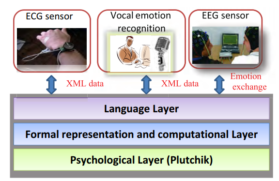

Modélisation, détection et annotation des états émotionnels
L'étude bibliographique des travaux concernant la modélisation et l'annotation
des états émotionnels, nous a permis de montrer que le problème d'échange d'émotions
entre applications n'est pas suffisamment traité et qu'il n'existe pas de modèle
formel de représentation des émotions. En effet, les langages {EMMA, EARL, EmotionML} proposés dans la littérature
présentent des limites pour la représentation, l'analyse et l'annotation des émotions.
Le langage EMMA est utilisé comme une norme d'échange de données entre les
composants du système multimodale. Mais il ne standardise pas la représentation
des données entrantes d'interprétations des utilisateurs. En effet, il permet seulement
l'annotation de différentes données entrantes des utilisateurs, mais ne permet pas
de définir les notions annotées. C'est un langage générique pour l'annotation des
données. Ce langage est aussi monodispositif et plus orienté vers les entrées que
vers les sorties [Rouillard 2008].
EARL et EmotionML quant à eux, permettent la représentation et l'échange
des états émotionnels, mais ils ne sont pas encore standardisés et n'expriment pas
les nuances sémantiques et pragmatiques des émotions. En fait, ces deux langages
d'annotation des émotions ne permettent pas d'identifier les qualités sémantiques des
données émotionnelles et par conséquent, il ne permettent pas l'échange du concept
émotionnel entre applications. Ils utilisent le dictionnaire de langues naturelles pour
la définition des émotions. Par exemple, le mot joie avec EARL ou EmotionML va
être interprété comme une chaîne de caractères {j, o, y } et pas comme un concept
qui peut être traduit en plusieurs langages, joie en français, farah en arabe, gioia
en italien, etc.
Contribution 4 : Système d’échange entre applications multimodales
nous présentons un modèle générique pour la représentation
et l'échange des émotions entre applications multimodales. Il s'agit d'un modèle de
représentation hiérarchique composé de trois couches, comme le montre la figure suivante : la couche psychologique, la couche formelle de représentation et de traitement
des émotions et la couche langage.

La première couche (la couche psychologique) représente le modèle psychologique que
nous avons adopté pour décrire les émotions . Il s'agit de la théorie de Plutchik, définie par le circumplex
qui est un modèle multidimensionnel basé sur des émotions
primaires de base dont vont dériver des émotions secondaires. La seconde couche est
un modèle formel multidimensionnel qui correspond à l'approche psychologique de
la première couche : chaque émotion est représentée par un vecteur dans un espace
8-dimensions où chaque axe représente une émotion de base tels que défini par Plutchik.
Cette approche multidimensionnelle se base sur la représentation algébrique
des émotions dans un espace vectoriel. L'idée de base consiste à représenter une
émotion par un vecteur dans un espace approprié, puis à lui appliquer toute une
gamme de traitements algébriques. Cela nous a permis de représenter une infinité
d'émotions et de proposer des outils mathématiques très performants pour l'analyse
et le traitement de ces émotions comme l'addition, la projection la décomposition,
etc. Enfin, la dernière couche qui est la couche langage, basée sur les descriptions
XML des données émotionnelle finales ce qui permet de faciliter le transfert entre
les applications. Notre proposition facilite l'échange inter-systèmes. Elle permet le
transfert efficace de l'information émotionnelle entre applications hétérogènes,
indépendamment des modalités et des capteurs utilisés pour la détection.